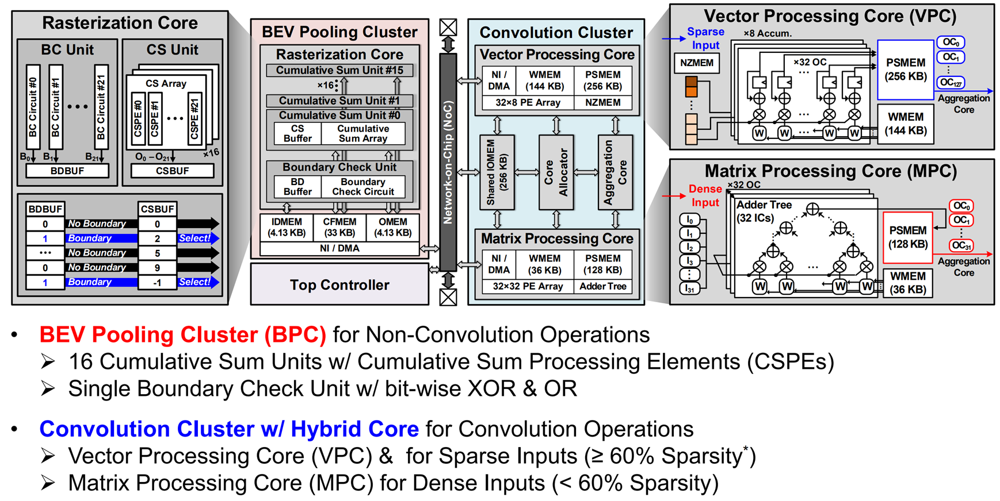
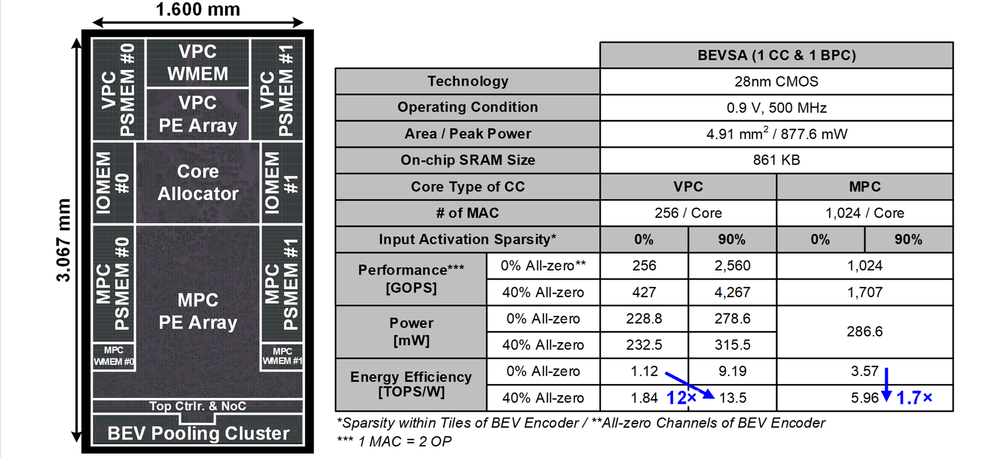

BEVSA: Bird's-Eye-View Semantic Segmentation Accelerator
DAC 2025
Overview
BEVSA is a hardware accelerator for real-time bird's-eye-view (BEV) semantic segmentation in multi-camera autonomous driving systems. The bottleneck in BEV perception is the view transformation step (BEV pooling), which requires sorting and irregular memory access over a wide search space — consuming 68.3 ms on edge platforms.
Key Contributions
1. Block-decomposed Hierarchical BEV Pooling: Partitions the camera-to-BEV search space in an MCS-compatible way and supports parallel pooling execution, achieving 43.2× speedup for BEV pooling over baseline edge computing platforms.
2. Coarse-to-Fine-Grained Zero Skipping Convolution: Exploits the 69.1% average input activation sparsity in BEV feature maps. Performs coarse-grained all-zero channel skipping and tile-wise fine-grained zero skipping, improving convolution throughput by 1.61×.

Results
Implemented in 28nm technology. Evaluated on two representative multi-camera autonomous driving datasets. Achieves 23.1 FPS real-time BEV segmentation with 167.4× higher energy efficiency per frame over edge computing platforms.
